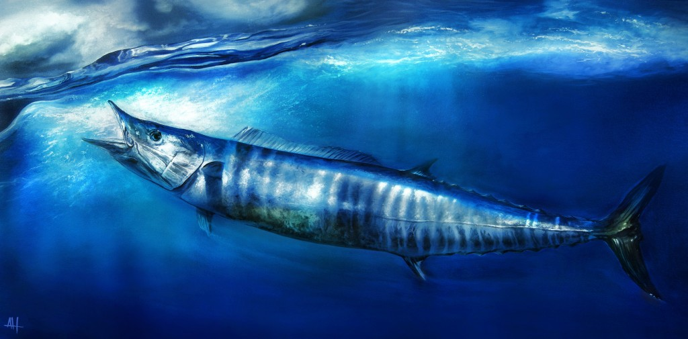

This website is for any fishermen in need. The type of lures that you use are important on different days. For example, on cloudy days you want to use darker colors. On sunny days you want to use more colorful lures. If you need gear we can tell you where you can get it from; as in what stores and the prices for certain gear. It is important that you know what type of gear to use for the different type of fishing that you are doing. Sometimes cheap is not the way to go. Let's say that you buy a cheap fishing rod that will last you maybe a couple trips, but if you buy a more expensive fishing rod it could last you way longer if taken care of properly. The same principle applies with the gear that you use; if you buy cheap fishing line it will break easier, it doesn't have to be outrageously expensive though.